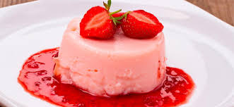

Nuestros Postres
Esto es lo que nos proponen Inés Ortega, hija de la gran Simone, autora de 1080 recetas de cocina, y su nuera Marina Rivas. Ambas firman el libro Nuestros postres, que sale al mercado publicado por Alianza Editorial y que está dentro de la colección 1080 Nuevas ideas de cocina y que, según la editora Valeria Ciompi "es un libro que es puro placer, porque cocinar está de moda y es una de las mejores actividades que se pueden hacer en familia, con amigos, con niños, etc". Se suma a otras publicaciones bajo este mismo sello como fueron Nuestros menús, La Cocina de las 4 estaciones o Cocina sana y sencilla y está previsto que haya más.
